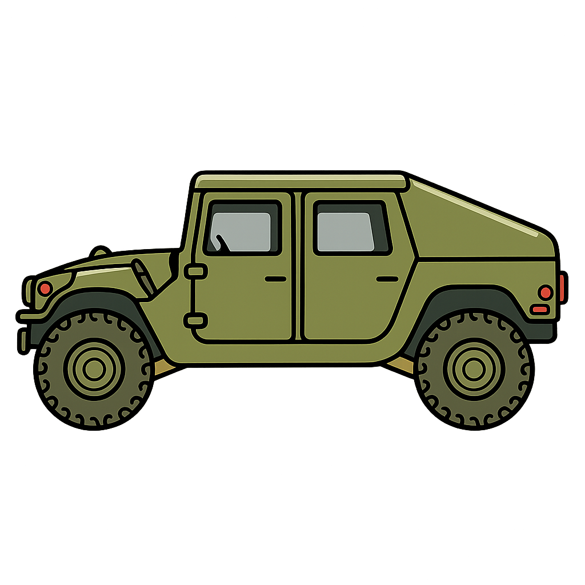

Motorpool Monday? Use guided inspection mode to walk through PMCS items step by step.

Vehicle-specific PMCS items are now filtered
No items found matching your search criteria.
Try:
PMCS (Preventive Maintenance Checks and Services) involves checks at various intervals to ensure vehicle readiness and safety:
Required before using the vehicle. These checks identify potential safety hazards and mission-critical defects before operation begins.
Performed while operating the vehicle. Monitor gauges, listen for unusual sounds, and check vehicle performance during use.
Conducted after vehicle operation. Check for leaks, damage, or issues that may have developed during use and prepare for next operation.
Performed once every 7 days. More detailed inspections of systems and components to prevent breakdowns and ensure continued reliability.
Conducted once every 30 days. Comprehensive inspections and maintenance tasks to maintain long-term vehicle health and mission readiness.
Note: Depending on specific equipment and technical manuals (TM), there may also be semi-annual, annual, or bi-annual checks. Always refer to the applicable TM for complete requirements.
Select which intervals to include. Current vehicle/system filters will apply.